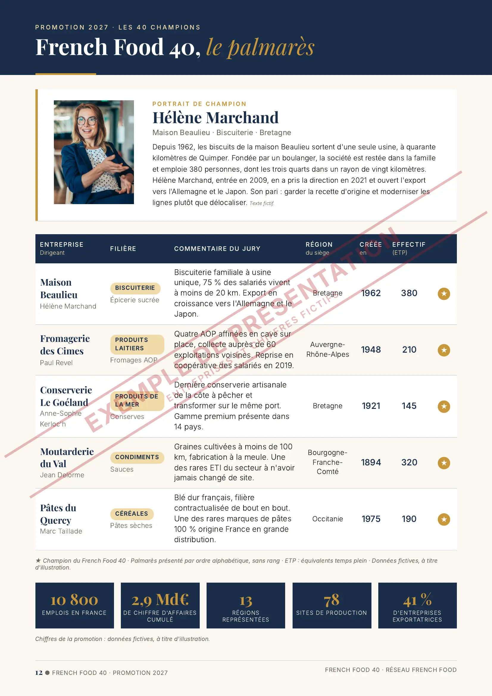
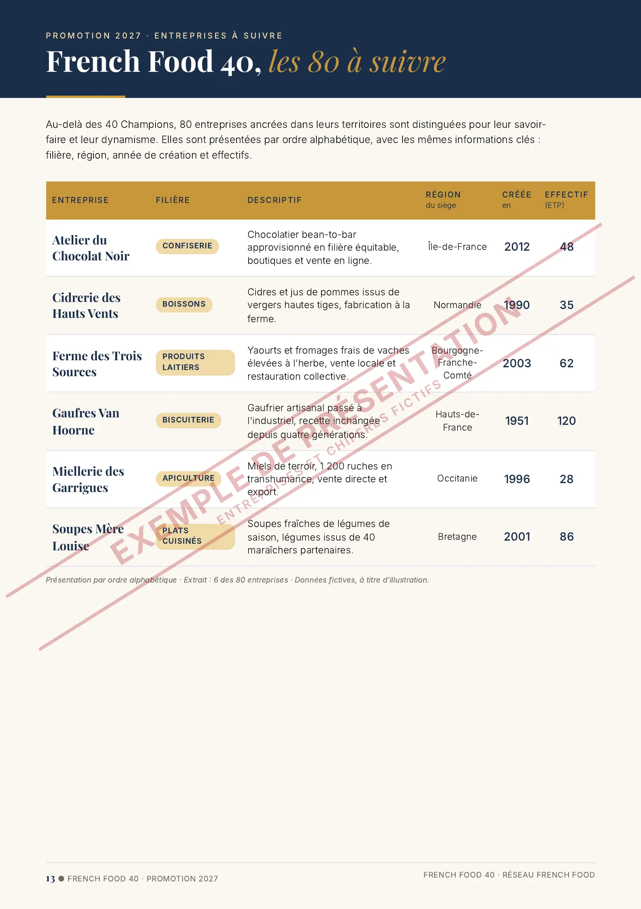

French Food 40 · Édition #1 · 2027
Un palmarès annuel qui révèle les PME et ETI qui font l'alimentaire français, sur le modèle du French Tech Next 40/120.
Et un rendez-vous éditorial à installer chaque année, autour de 40 histoires d'entreprises et de territoires.
Proposition de partenariat média
300+
PME et ETI agroalimentaires dans le vivier, de toutes les régions
120
entreprises présélectionnées, mises en valeur comme « entreprises à suivre »
40
champions désignés par un jury de personnalités
Premier employeur industriel du pays, l'alimentaire français n'a pourtant aucun palmarès qui révèle ses champions. Qui peut en citer cinq ? Changeons cela ensemble.
La méthode
1
Le vivier
Plus de 300 PME et ETI cartographiées dans toutes les régions. Périmètre visé : siège en France, capital familial, fondateur ou coopératif, chiffre d'affaires de 20 à 500 M€.
2
La présélection des 120
Sur trois critères : ancrage français (une marque ou un produit identifiable comme français), savoir-faire distinctif, poids économique et ancrage dans son bassin. Avec un appel à candidatures.
3
Le jury désigne les 40
6 à 8 personnalités : dirigeants, distribution, investisseur, élu, journaliste, chef. Vote à bulletin secret. Aucun juré ne dirige une entreprise candidate.
Ce que le classement produit
- Le palmarès, révélé en exclusivité par le partenaire média
- Un supplément éditorial : portraits des 40, interview du président du jury
- Une fiche portrait par lauréat sur le site
- Un badge et un kit LinkedIn pour chaque lauréat
La révélation
- Mi-2027, à Paris, à Station F (en discussion) - date précise communiquée aux invités
- 150 à 200 invités, sur invitation
- Dévoilement des 40 Champions et des 80 entreprises à suivre
- Les 40 dirigeants sur scène, avec le jury et les partenaires
- Un événement co-brandé avec le partenaire média
Exemples d'entreprises du vivier (avant sélection) : Hénaff, Alpina Savoie, Biscuits Bouvard, Moutarde Fallot, Chicorée Leroux, Saint Michel, Malongo, Breizh Cola, Lucien Georgelin...
Le palmarès
À quoi ressemblera le palmarès
Le French Food 40 n'est pas un classement numéroté : c'est une promotion annuelle de 120 entreprises, dont 40 Champions désignés par le jury. Les lauréats sont présentés par ordre alphabétique, chacun avec sa fiche : région, filière, produit signature, effectif et avis du jury.


Ce que le French Food 40 apporte au partenaire média
Une franchise éditoriale annuelle, clé en main.
01
L'exclusivité
- La révélation du palmarès, en exclusivité
- 40 histoires d'entreprises et de territoires que personne n'a encore racontées
- Un rendez-vous annuel attendu, qui s'installe édition après édition
02
Les contenus
- Un supplément éditorial : portraits des 40, interview du président du jury
- Des contenus déclinables : print, web, réseaux sociaux, vidéo
- Un accès privilégié aux dirigeants, au jury et aux coulisses de la sélection
03
L'audience
- Des lecteurs dans toutes les régions, là où sont les entreprises du classement
- Un sujet fédérateur : économie réelle, savoir-faire, souveraineté alimentaire
- Un environnement valorisant pour les annonceurs de l'alimentaire et de la distribution
Avant
- Annonce du partenariat
- Appel à candidatures relayé par votre titre
- Coulisses de la sélection
Révélation
- Publication du palmarès en exclusivité
- Événement co-brandé à Station F (en discussion)
- Prise de parole sur scène
Après
- Suivi des lauréats
- Reprises presse et réseaux sociaux citant votre titre
- Archives et contenus réutilisables
Ce que nous apportons
- Le classement clés en main : méthodologie, jury, présélection des 120
- Les données et une fiche portrait par entreprise
- L'accès aux dirigeants pour vos interviews
- L'organisation de la soirée de révélation, financée par les partenaires fondateurs
Étape 1
ÉchangeVos attentes éditoriales et votre calendrierÉtape 2
PropositionFormat éditorial et dispositif, sur mesureÉtape 3
AnnoncePartenaire média dès le lancementMi-2027
RévélationLe palmarès dans vos colonnes
Les porteurs
Émilie Aris, directrice commerciale et marketing de la Ferme de la Motte, 20 ans dans l'agroalimentaire (Bel, Carapelli).
Arnaud Nouvion, 20 ans en communication institutionnelle et affaires publiques, créateur de projets d'intérêt général.